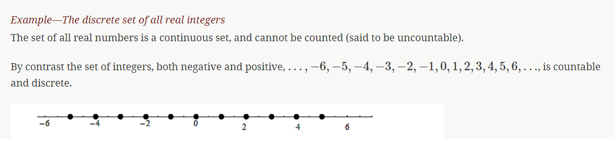
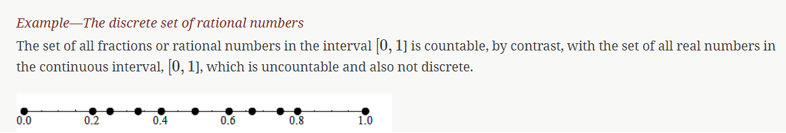
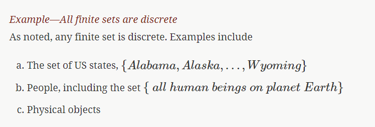
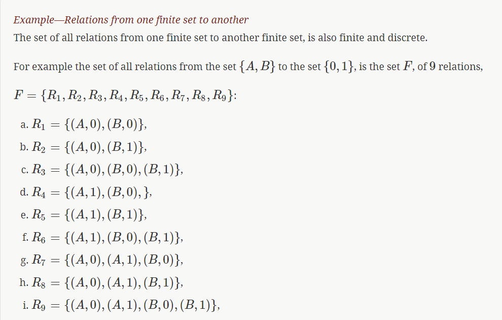

This course introduces the foundations of discrete mathematics as they apply to computer science and information technology.
The examples are visualized using PythonTutor. PythonTutor is an environment for creating very short and simple Python programs and visualizing their execution. This enables beginners to visually see the data as it gets manipulated by the instructions.
Discrete mathematics is applied in many areas including the physical, engineering, and increasingly, the social sciences.
Discrete mathematics is needed for computer science as information and data is stored digitally. Digitally represented data is inherently discrete and is processed using discrete methods. A voter registry may have voters in a database accessible from a list which may need to be accessed and sorted, say geographically or alphabetically.
Data science solutions to many problems use machine learning algorithms that are inherently discrete in nature. The information that needs processing is discrete, as are the basic problems in data science such as classification or clustering problems.
Sets of objects are discrete if there is a gap between each of the elements. Informally we mean that the elements are not connected continuously so that there the values of the set elements do not fall on a continuum. Practically speaking, sets are discrete if they can be counted.
Note: A finite set is always discrete, since it can be counted.
There are various types of discrete sets.




There are many different programming languages for programmers to choose from. Each language has its own advantages and disadvantages, and new languages gain popularity while older ones slowly lose ground. For the code examples, we use the Python 3 programming language.
Use the Next button to step through the program below and watch the data get created and modified. Notice how the arrows move to indicate what instruction the program execution is on.